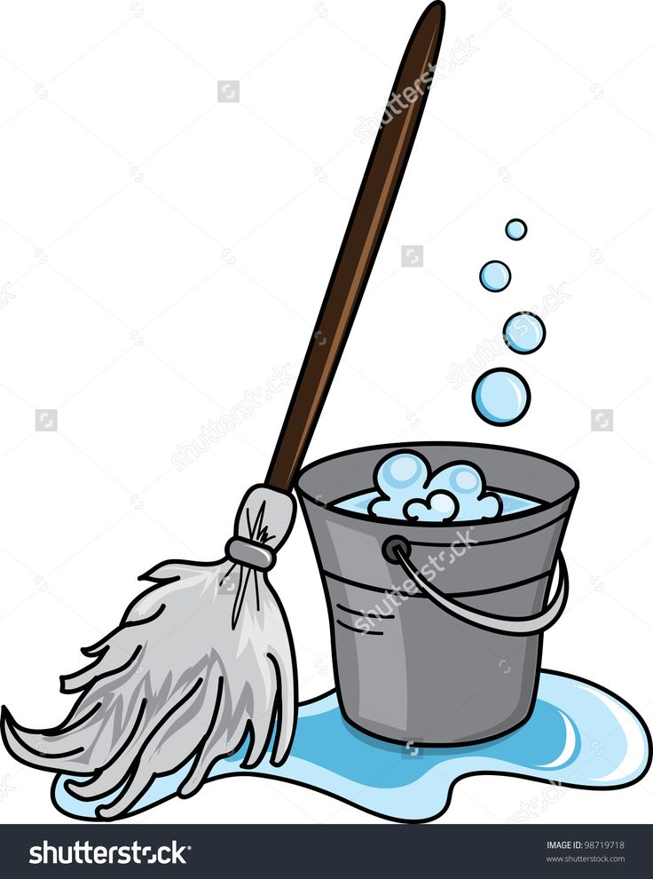
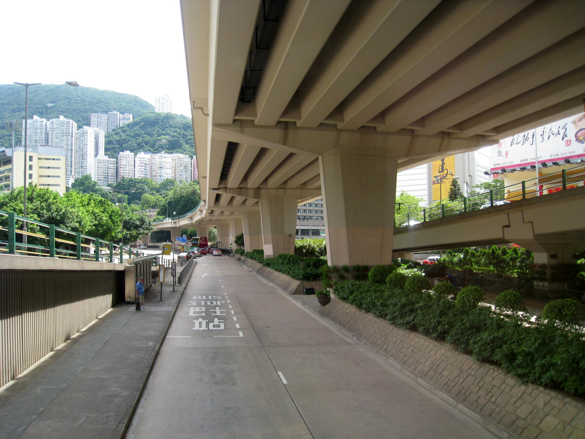
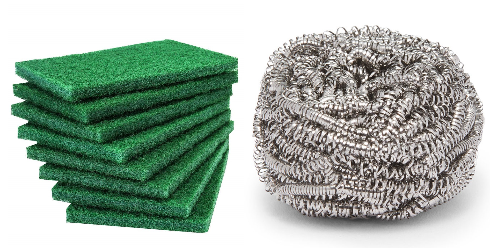

My Vocabulary Page
watch out v //
be vigilant or alert; be on the lookout
1.1/ Watch out! It's rather wet over there.
1.2/ You had better watch out.
watch out for something
1.3/ Watch out for the tree!
1.4/ Watch out for bears!
1.5/ Watch out for thieves round here.
see also: look out, a lookout
watch out for somebody/something:
be careful to notice somebody/something interesting
2.1/ Watch out for his latest movie, out next month.
2.2/ "Mild weather and drizzly days for now, but watch out for
the coming heat wave."
2.3/ "We watch our for our neighbours who are watching you!"
look out v //
watch what is happening and be careful
1.1/ Look out! There's a car coming!
1.2/ Please look out when you’re crossing streets.
look out for something
1.3/ You should look out for pickpockets.
1.4/ The police have warned shopkeepers to look out for forged notes.
1.5/ Do look out for spelling mistakes in your work.
synonym: watch out
look out something: search for and find something
2.1/ I'll look out that recipe I told you about and send it to you.
2.2/ I'll look out those old photographs you wanted to see.
look out for somebody/something
2.3/ I'll look out for you at the conference.
2.4/ "Look Out for the Little Guy!" (by Scott Lang)
watch v(i,t) //
look at somebody/something for a time,
paying attention to what happens
1.1/ I was in the living room, watching TV.
1.2/ "I am going to watch a movie."
1.3/ "I want to watch a video at night."
1.4/ He sat on the ground and watched me with great interest.
1.5/ The film is well made and fun to watch - just don't expect a classic.
1.6/ She stood and watched as the taxi drove off.
1.7/ "You come to play football, you come to watch a football game,
you understand as a player and as a fan that there are certain risks
involved in it."
watch somebody do something
1.8/ They watched the bus disappear into the distance.
1.9/ "I watch my dog play with toys."
watch somebody doing something
1.10/ She watched the kids playing in the yard.
watch something for something
1.11/ He watched the house for signs of activity.
1.12/ "Watch the neighborhood for any pets roaming free or being walked."
watch for something
1.13/ He watched for signs of activity in the house.
watch to do something
1.14/ We watched to see what would happen next.
1.15/ "Movies to watch to learn American English are available for every level."
watch + wh-clause
1.16/ Watch what I do, then you try.
1.17/ "Come watch how I cook Dhall with Calabash."
v(t) take care of somebody/something for a short time
2.1/ It's OK, I can watch the baby for a while.
2.2/ "I need an easier job so I can still watch my kids at home."
watch somebody/something for somebody
2.3/ Could you watch my bags for me while I buy a paper?
v(t) [mind] be careful about something
3.1/ Watch your bag - there are thieves around.
3.2/ Watch your head on the low ceiling.
3.3/ "Please watch your dog."
3.4/ "Watch your steps on muddy road to avoid falling on slippery mud."
3.5/ "You must watch your dog at all times and give the situation
your full attention to ensure your dog is not being bullied or
pestering other people and pets."
3.6/ "Someone will catch your eye and then you will have to watch your tongue."
watch + wh-clause
3.7/ Hey, watch where you're going!
3.8/ "I should really watch where I am going."
v(i,t) pay attention to a situation so that you notice any changes
4.1/ We're watching the situation very carefully.
4.2/ This election is being closely watched in the region.
4.3/ The food retail sector is one to watch.
watch for something
4.4/ We will watch for any developments.
4.5/ "For the next seven days, the system will watch for any updates
or changes to the ticket."
v(t) observe somebody's activities without their knowledge,
especially over a period of time
5.1/ "Big Brother is watching you."
5.2/ He didn't know he was being watched by the authorities.
see also: surveil, n(u) surveillance
judge n(c) //
a person who is in charge of a trial in a court and decides
how a person who is guilty of a crime should be punished,
or who makes decisions on legal matters
a judge of the Hight Court(/the District Court/the Court of Final Appeal)
1.1/ a British high-court judge
1.2/ a US Supreme Court judge
1.3/ "Mr Wong joined the Judiciary as a Permanent Magistrate in 2001,
and was appointed a Judge of the District Court in 2009."
before a judge
1.4/ The case comes before Judge Cooper next week.
1.5/ He will appear before a judge tomorrow.
in court
1.6/ In Britain, judges wear white wigs in court.
pronounce sentence on a defendant
1.7/ The judge sentenced him to five years in prison.
1.8/ The judge will pronounce sentence on the defendant this afternoon.
1.9/ He shouted abuse at the judge after being sentenced to
five years imprisonment.
1.10/ "The judge pronounced him guilty of injuring public modesty
and sentenced him to two years."
1.11/ "He went to court and the judge pronounced him innocent."
1.12/ "Mr Rayney, 50, looked relieved as the judge pronounced him not guilty
of wilful murder and an alternative count of manslaughter."
a complainant, a plaintiff, a defendent, a witness, the jury
1.13/ The judge reminded the witness that she was under oath.
1.14/ "A judge dismissed a complainant’s application for an increase in
and retroactive child support."
1.15/ The judge in the case reminded the jury not to discuss the case
outside the courtroom.
a lawyer, a solicitor, a barrister
1.16/ "The judge told the barrister for the CFA that her comments
must be relayed immediately and that she was making a mandatory order
directing the Gardai."
(other examples)
1.17/ The judge awarded him damages of €20,000.
1.18/ A judge ordered her to be remanded in custody.
1.19/ The judge ruled that the evidence was inadmissible.
1.20/ Appeals court judges overturned the previous ruling.
n(c) a person who decides who has won a competition
2.1/ The judges' decision is final.
2.2/ he was invited to be a judge in a cookery competition.
2.3/ "The Judges in Britain's Got Talent decide which acts progress from
the Auditions to the Semi-Finals, and, for every series barring Series 11,
decide who, from the 2nd and 3rd placed acts in the public vote,
progress /prə'gres/from the Semi-Finals to the Final."
a panel of judges
2.4/ A panel of judges chose six team projects as winners.
2.5/ She has joined the panel of judges in the popular TV talent show.
2.7/ "A panel of judges will then chose the three most worthy items
from those submitted."
n(singular) a person who has the necessary knowledge or skills to
give their opinion about the value or quality of somebody/something
3.1/ The last singer was the best - not that I'm any judge.
a judge of something
3.2/ "I am no judge of beauty."
3.3/ She's a good judge of character.
3.4/ She's such a bad judge of character.
3.5/ He was a shrewd judge of people.
3.6/ You are the best judge of what your body needs.
3.7/ "I'm not sure that's a good way to do it." "Let me be the judge of that."
3.8/ "What could you do to feel better, and stop being a judge
of other people's behavior?"
judge v(i,t) //
form, give, or have as an opinion, or decide about somebody/something
especially after thinking carefully
4.1/ As far as I can judge, all of them are to blame.
4.2/ So far, he seems to be handling the job well,
but it's really too soon to judge.
judge by(/on) something
4.3/ You shouldn't judge by(/on) appearances alone.
4.4/ "They can automatically judge by experience what the context
of a situation is and what a fitting solution would be, in a secure way."
judge somebody/something
4.5/ I'm hopeless at judging distance(/distances).
4.6/ "Instead of focusing on one element such as color,
it's better to judge a diamond's beauty as a whole."
4.7/ "Scotland needs to judge the costs of independence."
4.8/ Young children are unable to judge the speed of traffic.
judge somebody/something on(/by) something
4.9/ Schools should not be judged only on exam results.
4.10/ Each painting must be judged on its own merits.
4.11/ "Judge a person by their character, not the color of their skin."
4.12/ (idiom) You can't judge a book by its cover.
judge somebody/something based on something
4.13/ "He judged the book based on descriptions provided by the mothers."
4.14/ "I judged the book based on its cover."
judge somebody/something to be(/do) something
4.15/ I judged him to be about fifty.
4.16/ The meeting was judged to have been a success.
4.17/ The concert was judged to have been a great success.
4.18/ "We judged the distance to be four miles."
judge somebody/something + noun
4.19/ "I judge him a skilled worker."
4.20/ "We judge him a con artist."
4.21/ "White House aides judged the trip an unqualified success for Carter,
whose popularity in the polls is at an all-time low."
judge somebody/something + adj
4.22/ They judged it wise to say nothing.
4.23/ "The comments judged the tour inhuman and improbable."
judge that ...
4.24/ He judged that the risk was too great.
It is judged that ...
4.25/ It was judged that the risk was too great.
judge + wh-clause ...
4.26/ It was hard to judge how great the risk was.
4.27/ It’s hard to judge how old he is.
4.28/ "We also asked respondents to judge how large a gain in life expectancy
would justify a hypothetical cancer drug that costs $70,000 a year."
4.29/ It's difficult to judge how long the journey will take.
see also: assess, evaluate
judging by/from something (/to judge from/by something):
used to express the reasons why you have a particular opinion
5.1/ To judge from what he said, he was very disappointed.
5.2/ Judging by what he said, I think it's very unlikely that he will be
able to support your application.
5.3/ "Judging by appearances, the organizers have spent a lot of money
on the event."
v(i,t) judge (somebody): express a bad opinion of someone's behaviour
often because you think you are better than them
6.1/ What gives you the right to judge other people?
6.2/ I'm not one to judge, but that's no way to behave.
6.3/ You have no right to judge other people because of
what they look like or what they believe.
6.4/ "My boyfriend judges me and my past, or am I being touchy?"
6.5/ "Is it fair the my boyfriend judges me about my past when
he has made the same mistakes?"
see also: be prejudiced(/biased) against(/in favour of) somebody/something
v(i,t) officially decide who will be the winner of a competition
7.1/ She was asked to judge the essay competition.
7.2/ I've been asked to judge the children's poetry competition.
judge somebody/something + noun
7.3/ The first team to cross the line will be judged the winner.
7.4/ The Russian dancer was judged the winner.
judge somebody/something + adj
7.5/ Their garden was judged the best in Wales by a TV viewers' poll.
7.6/ "At Notre Dame every area was judged excellent across both schools."
judge somebody/something to be/do something
7.7/ "Finally, the French boxer was judged to be disqualified."
v(t) decide whether somebody is guilty or innocent in a court
judge a case
8.1/ "The Supreme Court judged the case in favor of the court appointed
bankruptcy trustee Masaaki Sawano of Kabushiki Kaisha Quin Ash,
a bankrupt company."
8.2/ "Chief Justice Castille not only judged the case of Mr. Williams,
a man for whom he had personally sought the death sentence,
but he also passed judgment on the ethical conduct of a prosecutor
who had been acting under his leadership."
judge somebody guilty/not guilty
8.3/ The court judged him guilty.
8.4/ "Steve knows most people have already judged him guilty."
8.5/ "The jury eventually judged her not guilty, the first recorded case
for a woman so pleading."
Santa Claus noun //

(also: Santa) Santa Claus is the make-believe person who brings toys
and other gifts to children at Christmas 聖誕老人
the look of Santa Claus
1.1/ The happy, white-bearded man is dressed in red.
1.2/ Santa Claus has a white beard, round body, red clothes and a belt.
1.3/ Santa Claus is plump, with rosy cheeks and a curly white beard.
how Santa Claus flies
1.4/ Santa Claus flies from his home at the North Pole on
Christmas Eve to bring toys and gifts to children.
1.5/ He usually flies on a sleigh led by his reindeer.
1.6/ Santa Claus rides on a sledge in the winter forest.
1.7/ The Weihnachtsmann usually delivers his parcels and gifts with
a sledge drawn by reindeer as we all know.
Santa Claus enters your home
1.8/ Santa enters each home through the chimney and
fills children’s stockings with toys and gifts.
1.9/ Santa Claus appears in the fireplace.
1.10/ Santa Claus comes down from the chimney.
1.11/ In order to deliver the gifts, Santa Claus passes through
the chimney of the houses.
children get ready for the coming of Santa Claus
1.12/ Santa Claus comes to my home with gifts full of newly introduced food items!
1.13/ On Christmas Eve, American children leave cookies and milk for Santa
and carrots for his reindeer: Dasher, Dancer, Prancer, Vixen, Comet, Cupid,
Donner, Blitzen and the most famous reindeer of all, Rudolph.
1.14/ Did Santa Claus sneak into your house and leave a gift for you last night?
1.15/ Hang your stockings and say your prayers, "Cause Santa Claus comes tonight".
(Christmas poems and carols)
2.1/ "Rudolph the Red-Nosed Reindeer"
"You know Dasher and Dancer and Prancer and Vixen
Comet and Cupid and Donner and Blitzen
But do you recall
The most famous reindeer of all?
Rudolph the Red-Nosed Reindeer
Had a very shiny nose
And if you ever saw it
You would even say it glows
All of the other reindeer
Used to laugh and call him names
They never let poor Rudolph
Join in any reindeer games
Then one foggy Christmas Eve
Santa came to say
'Rudolph, with your nose so bright
Won't you guide my sleigh tonight?'
Then how the reindeer loved him
As they shouted out with glee
'Rudolph the Red-Nosed Reindeer
You'll go down in history'"
2.2/ "He spoke not a word, but went straight to his work,
And filled all the stockings; then turned with a jerk,
And laying his finger aside of his nose,
And giving a nod, up the chimney he rose"
2.3/ "Santa Claus Is Comin' to Town"
"You better watch out
You better not cry
You better not pout
I'm telling you why
Santa Claus is coming to town
He's making a list
He's checking it twice
He's find out who's naughty and nice
Santa Claus is coming to town
He sees you when you're sleeping
And he knows when you're awake
He knows if you've been bad or good
So be good for goodness sake!"
sensitive adj //
aware of and able to understand other people and their feelings
1.1/ He is a sensitive and caring man.
1.2/ In the movie, he plays a concerned and sensitive father trying to
bring up two teenage children on his own.
sensitive to something
1.3/ She is very sensitive to other people's feelings.
1.4/ My experience made me very sensitive to the suffering of others.
1.5/ Representatives of the company claim their plan will be
sensitive to local needs.
1.6/ Schools must be sensitive to the needs of students from
different backgrounds.
It is sensitive of you to do something
1.7/ "It is sensitive of you to make an effort when you can,
even though you don't have to."
see also: understanding, caring
(adj) easily offended or upset
2.1/ You're far too sensitive.
sensitive about something
2.2/ He's very sensitive about his weight.
2.3/ He was very sensitive about his scar and thought everyone
was staring at him.
sensitive to something
2.4/ She's very sensitive to criticism.
2.5/ Her reply showed that she was very sensitive to criticism.
2.6/ "Though usually I was sensitive to a scolding, Mama's cross words
that day had little effect."
(adj) a sensitive subject or situation needs to be dealt with
carefully in order to avoid upsetting people
3.1/ Sex education and birth control are sensitive issues.
3.2/ Healthcare is a politically sensitive issue.
3.3/ "Urology is a sensitive area."
3.4/ "It's a sensitive matter to the people around him."
3.5/ "It might be better to avoid such a sensitive topic."
3.6/ "Giving is usually a pretty sensitive topic in church, isn't it?"
3.7/ She is currently involved in highly sensitive negotiations.
3.8/ The stolen car contained military documents described as very sensitive.
3.9/ Nuclear power remains a very sensitive issue in the Netherlands.
be too senstive to do something
3.10/ The information was deemed too sensitive to be broadcast.
3.11/ "My news is too sensitive to be spread outside of this room."
see also: controversial, sticky
(adj) reacting quickly or more than usual to something
4.1/ "When it comes to touch, the big toe is regarded as one of the
most sensitive areas of the body."
sensitive to something
4.2/ I have become increasingly sensitive to the sun.
4.3/ The eyes of some fish are acutely sensitive to light.
4.4/ My teeth are very sensitive to cold food.
4.5/ Some people's teeth are highly sensitive to cold.
4.6/ These drugs can make skin extremely sensitive to sunlight.
4.7/ Young children are particularly sensitive to the harmful effects of pesticides.
4.8/ "Of all the creatures on Earth, snakes are perhaps the most
sensitive to earthquakes."
4.9/ "The low elevation of the islands makes them sensitive to the sea level rising."
(adj) able to measure very small changes
5.1/ The eyes can be a sensitive indicator of health.
5.2/ "A galvanometer is a sensitive instrument."
sensitive to something
5.3/ The Stock Exchange is very sensitive to political change.
5.4/ "By nature, most microphones are sensitive to vibrations in
a direction perpendicular to the membrane."
see also: sense, a sensor
celebrate v(i,t) //
take part in special enjoyable activities in order to show that
a particular occasion is important
1.1/ We had good reason to celebrate.
1.2/ Jake's passed his exams. We're going out to celebrate.
1.3/ If this plan works, we'll celebrate in style.
celebrate something on a day
1.4/ Australia Day is celebrated on January 26th.
1.5/ "In the Czech Republic we celebrate Christmas on the Christmas Eve."
1.6/ "Thanksgiving is celebrated on the first Thursday of November."
celebrate a festival
1.7/ How do people celebrate New Year in your country?
1.8/ "It's only once a year after all. How will you celebrate Christmas in Hong Kong?"
1.9/ "Come, let us bathe and celebrate the festival,
for which the world will praise us."
1.10/ "People from hundreds of kilometers away come to celebrate this festival
including a number of expatriate members of community."
1.11/ "Last weekend (6-8 May), the borough came together in full royal style
to celebrate the Coronation of King Charles III and Queen Camilla."
1.11/ There are coming-of-age traditions that celebrate the transition from childhood to adulthood.
celebrate an anniversary
1.12/ We celebrated our 25th wedding anniversary in Florence.
1.13/ The Film Festival is currently celebrating its 27th year.
1.14/ "The United Kingdom prepares to celebrate the Queen's Platinum Jubilee."
1.15/ "Let's forget the stereotypes and celebrate the centenary this year
of an influential and highly spirited phenomenon."
celebrate a birthday
1.16/ "Celebrate your birthday by seeing a play, having a picnic in the park,
visiting an escape room, or just chilling at home."
1.17/ "About a week ago I turned 11! I celebrated my birthday
with a birthday cake."
1.18/ Our kid wanted a small, traditional party to celebrate her 10th birthday.
celebrate an achievement(/a success)
1.19/ "The 'V' in Kardamyla was created after World War II to celebrate
the victory of the Allies."
1.20/ "Celebrate your success by making yourself a special lunch,
indulging in a bubble-bath, or treating yourself to an extra hour
in bed at the weekend."
celebrate something by doing something
1.21/ We always celebrate our wedding anniversary by going out to dinner.
celebrate (something) with somebody/something
1.22/ The event was celebrated with a parade.
1.23/ We always celebrate our wedding anniversary with a bottle of champagne.
1.24/ He made the trip home to celebrate Christmas with his family.
1.25/ She celebrated with a party for family and friends.
celebrate doing something
1.26/ In this photo he celebrates winning the men's 10 000 metres final.
celebrate the birth of Jesus Christ
1.27/ "We celebrate the birth of Jesus Christ is because God did."
1.28/ "Christmas is the time to celebrate the birth of Jesus Christ,
the birth of the son of God who came into this world to save us."
v(i,t) celebrate a goal
2.1/ "Egyptian Mohamed Salah has never celebrated after scoring
against former clubs, Roma and Fiorentina."
celebrate a goal by something/doing something
2.2/ "Why do football players always celebrate a goal by sliding
along the grass on their knees?"
2.3/ "A 23-year-old soccer player celebrated a goal by grabbing a ring
from his coach, jumping into the crowd, and proposing to his girlfriend."
2.4/ "On October 17, 1965, New York Giants wide receiver Homer Jones
celebrated a touchdown he scored against the Philadelphia Eagles by forcefully
throwing the football down in the end zone."
v(t) praise somebody/something
3.1/ They are songs that celebrate the joys of romantic love.
3.2/ I watch a movie celebrating the life and work of Nelson Mandela.
3.3/ "Christmas is not a time nor a season, but a state of mind.
To cherish peace and goodwill and to celebrate the life of Jesus Christ."
3.4/ "Why shouldn't we celebrate Napoleon?"
3.5/ "Minimis wanted to celebrate Napoleon as their leader
and Napoleon even had the poem inscribed on the wall."
celebrate somebody as something
3.6/ The competition has millions of fans and national winners are
celebrated as heroes.
see also: a celebrity
celebration n(c) //
a special event that people organize in order to celebrate something
1.1/ I hope you'll join in the Christmas celebrations.
1.2/ The occasion was the 40th anniversary celebrations of the orchestra.
1.3/ There were lively New Year celebrations all over town.
1.4/ "Join the celebrations by taking a flight on the iconic rollercoaster."
1.5/ "When and how much should you gift during a coming-of-age celebration?"
at a celebration
1.6/ "Children are singing at a Christmas celebration."
1.7/ "Emperor Hirohito and Empress Nagako wave to well-wishers from a balcony
at a New Year celebration at the Imperial Palace."
a celebration of something
1.8/ "It's not just a carol service; it's a celebration of the King's birth,
love and the magic of the Christmas season."
1.9/ "I think events like celebrations of the King's coronation lift everybody up
and also let the younger generation know about the royal family’s history."
a celebration for something
1.10/ They planned a special celebration for her homecoming.
1.11/ "To mark past successes and plan future battles,
Bellona Europa will host a coming-of-age celebration for our 18th birthday.
hold a celebration
1.12/ They held a celebration to mark forty years of the lifeboat service.
1.13/ "We decided to hold a celebration for Grandma's 90th birthday."
1.14/ A celebration is held for the boy at the age when he is considered
to have reached manhood.
call for(= deserve) a celebration
1.15/ This calls for a celebration!
1.16/ Such good news calls for a celebration!
attend a celebration
1.17/ They were among the crowd that attended the celebration.
1.18/ "Spectators did not have to pay to attend this celebration,
which also featured live music and family activities."
1.19/ "You are invited to attend a birthday celebration of your cousin."
'a celebration of life: a time when people come together to celebrate
the unique personality and achievements of the deceased
1.20/ The service was a celebration of his life.
1.21/ "We always enjoy working together with families in planning
a celebration of life for their loved one."
n(u) the act of celebrating something
2.1/ The city's annual celebration of Caribbean culture kicks off on June 4.
in celebration of something
2.2/ Let's buy some champagne in celebration of her safe arrival.
2.3/ They host a party in celebration of their fiftieth wedding anniversary.
2.4/ They organized a dinner in celebration of the year's successes.
a cause for celebration
2.5/ Her triumph was a cause for celebration.
2.6/ The victory was a cause for great celebration.
2.7/ If ever there was a cause for celebration, this peace treaty was it.
2.8/ The ending of the war is not a cause for celebration,
but rather for regret that it ever happened.
n(c) an act of dancing or shouting to show that you are happy
after you have succeeded at something
3.1/ He likes to get his teammates excited with his theatrical celebrations.
3.2/ The referee penalized the wide receiver because his touchdown celebration
was excessive.
3.3/ "Polish keeper saves penalty in Azerbaijan,
but then he is sent off for an offensive celebration."
campfire n(c) //

an outside fire, made and used by people who are staying outside or in tents
1/ The night was warm and there were dozens of campfires on the beach.
2/ Campfires are allowed at the discretion of the park rangers.
3/ "We love how campfires can really draw people together,
whether it be for warmth, a hot meal, or just a sense of community."
build a campfire
4/ Light up the campfire and get cooking.
5/ "In order to make a campfire you will need three different main types of wood:
tinder, kindling, and firewood (aka cord wood)."
6/ "Later that evening, Tom lit up the campfire so we could eat something."
embers in a campfire
7/ Red hot embers in the campfire glow in dark.
cook on the campfire
8/ "I love to cook steak on the campfire."
9/ "First you need to place the grill on the campfire, and then the cocking pot."
10/ "This time for outdoor cooking, I will make a different kind of grilled chicken
on the campfire using only two pieces of chicken breast."
11/ "Put the skewers on the campfire or barbecue to cook for about 20–30 minutes."
12/ "I always like to have these few things handy, no matter what I cook
on the campfire: leather, fireproof gloves; metal tongs; dry wood or charcoal;
fire starter; long gas lighter; BBQ grill and holder; knife; chopping board;
cast iron or fireproof cooking pots; aluminum foil; cooking oil;
spices and condiments; cooking ingredients."
sit/dance around a campfire
13/ We sat around the campfire telling stories and singing.
14/ "People dance around the campfire."
15/ "Last night we were dancing around the campfire until midnight
but nobody had really had anything to drink."
16/ The people cheering around the campfire were wearing rags,
but the smile on their faces was warm."
a campfire song
17/ I remember a campfire song like that from my youth.
18/ "Despite the dark and the cold, the children had a wonderful time:
they listened to stories, sang campfire songs and toasted (and ate) marshmallows."
19/ "Vintage Song Books:
We Sing Around the Campfire and Folk Songs for Everyone"
20/ "Local people dance and sing folk songs around the campfire in Baisha Village."
see also: a bonfire
decide v(i,t) //
think carefully about the different possibilities
that are available and choose one of them
1.1/ It is up to you to decide.
1.2/ They have to decide by next Friday.
1.3/ You have to decide soon.
1.4/ It doesn't matter to me which one we have - you decide.
decide for yourself/somebody
1.5/ I can't tell you what to do - you'll have to decide for yourself.
1.6/ "If you can't make up your mind, then I'll decide for you."
v(i) decide to do something
1.7/ We have decided not to go away after all.
1.8/ In the end, we decided to go to the theatre.
1.9/ She gave up politics and decided instead to focus on charity work.
1.10/ After a gap of five years, Jennifer decided to go back to work full-time.
decide that ...
1.11/ She decided that she would travel to India.
1.12/ She decided that she wanted to live in France.
1.13/ The government has already decided that the law needs to be changed.
1.14/ In the end, we decided to go to the theatre.
decide + wh-clause
1.15/ You have the right to decide what you want to do.
1.16/ "We are still trying to decide where we are going."
1.17/ She couldn’t decide whether he was telling the truth or not.
1.18/ Have you decided where you're going for your holiday this year?
1.19/ The jury has to decide whether a person is guilty or innocent of a crime.
1.20/ I can't decide what to wear.
1.21/ He can't decide whether to buy it.
1.22/ It is up to you whether to buy it or not.
1.23/ "Now that you know where you're going, you need to decide
how to get there."
1.24/ Stand the paintings against the wall while we decide where to hang them.
decide between A and B
1.25/ It was difficult to decide between the two candidates.
decide in favour of something
1.26/ The committee decided in favour of the cheapest option.
decide against something/doing something
1.27/ She finally decided against a career in medicine.
1.28/ They decided against taking legal action.
v(t) decide something
1.29/ The venue for the concert has yet to be decided.
1.30/ We might be hiring more people but nothing has been decided yet.
1.31/ Sales figures will ultimately decide the future of these types of games.
1.32/ "He can't decide a gift for you by himself."
1.33/ "Let them decide the gift themselves - for the person that
knows their own style."
1.34/ "Check your budget, and then decide the gift based on
the three dimensions we've talked above."
1.35/ "You decide the time we are going to meet."
1.35/ "Your better half decides the timetable of your life."
It is decided that ...
1.35/ It was decided that the school should purchase new software.
remark: "decide something" is less often seen than "decide to do something".
v(t) affect the result of something
2.1/ Tim's mistake decided the game.
2.2/ The weather decided the outcome of the tennis match.
2.3/ "We have decided the fate of humanity."
2.4/ "Guys, this election will decide the present of the Unitted Stats."
2.5/ "It's for the Ukrainian people to decide the future of Ukraine itself."
2.6/ A number of factors decide whether a movie will be successful or not.
v(t) be the reason why somebody does something
3.1/ They offered me free accommodation for a year, and that decided me.
(adj) deciding
3.2/ The chairperson always has the deciding vote.
3.3/ Glennon scored the deciding goal in the final minute of the match.
the deciding factor (of something)
3.4/ For most customers, price is the deciding factor.
3.5/ The environmental argument was a deciding factor.
3.6/ "Be the deciding factor of your own happiness and
stop letting other people control it."
3.7/ His lack of experience was the deciding factor in my decision not to hire him.
3.8/ "His home run was the deciding factor in the game."
decide on something v //
decide on somebody/something:
choose somebody/something after careful thought
1/ I have decided on blue for the bathroom.
2/ We're still trying to decide on a venue.
3/ I cannot decide on who to invite.
4/ "After hours of careful study, my protectee had decided on a handbag,
which was ostrich skin."
5/ "The Trio decided on a cute outfit at the store and are now flaunting it!"
6/ "You may decide on who to help in your life."
7/ "How do the faculty members decide on who to save?"
suspicious adj //
[feeling] feeling doubt or no trust in someone or something
1.1/ I think they are starting to get suspicious.
1.2/ "They give me a suspicious look."
feel/be suspicious of(/about) somebody or something
1.3/ Many were suspicious of reform.
1.4/ I was suspicious of his motives.
1.5/ They became suspicious of his behaviour and contacted the police.
1.6/ "I confess that I am suspicious of my next-door neighbors."
1.7/ "I was suspicious of my classmates' unbridled enthusiasm for life."
1.8/ "I am suspicious about everything he does."
1.9/ They were somewhat suspicious about her past.
1.10/ "Sneak on your classmates if you feel suspicious about what they are up to."
have a suspicious mind/nature
1.11/ My mother has a very suspicious nature.
1.12/ You have a very suspicious mind.
1.13/ "I guess all detectives have suspicious minds."
see also: be sceptical of/about something, suspect somebody of doing something
(adj) making you feel that something is wrong, illegal or dishonest
2.1/ She died in suspicious circumstances.
2.2/ Didn't you notice anything suspicious in his behaviour?
2.3/ Police are not treating the fire as suspicious.
look suspicious
2.4/ It might look suspicious if we arrived together.
2.5 "These changes look suspicious."
see also: doubt, suspect, suspicion
care for somebody/something v //
care for somebody/an animal:
provide for a person(/an animal)'s needs and to protect that person/animal
1/ Bob and his sister take turns caring for their elderly mother.
2/ "How do I care for my cat after neutering?"
3/ She can't go out to work because she has to stay at home
to care for her elderly mother.
4/ It's good to know that the dogs will be well cared for while we're away.
5/ "In many Asian societies boys are regarded as important because
they look after property; inherit land; have more opportunities to
get ahead in life than daughters; care for parents when they get old;
and perform important ceremonial duties when the parents die."
6/ "Through volunteers, we care for the elderly in the community,
cultivate a spirit of self-help and mutual assistance,
and establish a harmonious community."
be cared for by somebody
7/ The children are being cared for by a relative.
see also: look after somebody, watch over somebody, provide for somebody,
take care of somebody/something
look after somebody/something v //
look after somebody/something/yourself:
be responsible for or take care of somebody/something/yourself
1.1/ Who's going to look after the children while you're away?
1.2/ I'm looking after his affairs while he's in hospital.
1.3/ Don't worry about me - I can look after myself.
1.4/ "I always leave pretty detailed lists of what do to when family members
look after my cats and dogs."
look after something: make sure that things happen to somebody’s advantage
2.1/ He is good at looking after his own interests.
2.2/ "I have a spouse or a partner who can look after my interests."
obsessed adj //
unable to stop thinking about something;
too interested in or worried about something
be obsessed with something
1/ Why are people so obsessed with money?
2/ She's completely obsessed with him.
3/ She is obsessed with personal hygiene.
4/ "Dragonflight isn't being designed for players obsessed with
topping DPS meters."
be obsessed by something
5/ He is obsessed by computers.
6/ As a society we are obsessed by sex.
7/ Mankind has always been obsessed by power.
8/ Most journalists are obsessed by the need to produce the most
exciting newspaper story.
see also: be overwhelmed with/by something, be possessed, compulsive
Obsessive-compulsive disorder (OCD)
resolution n(c) //
a promise to yourself to do or to not do something
1.1/ Have you made any New Year's resolutions?
(make) a resolution to do something
1.2/ I made a New Year resolution to give up smoking.
1.3/ She made a resolution to visit her relatives more often.
1.4/ I made a resolution to give up chocolate.
fulfil a resolution
1.5/ "I was determined and was prepared to do almost anything
in order to fulfill my resolution.
1.6/ "I wasn't able to fulfil my resolution last year but I will
certainly achieve it this year."
fail a resolution
1.7/ "I can't fail my New Year's resolution if I don't remember making one."
carry out a resolution
1.8/ "As a result, I lose motivation to carry out my resolutions and I end up
forgetting about them altogether."
n(u,singular) the act of solving or settling a problem or an argument.
2.1/ The government is pressing for an early resolution of the dispute.
a resolution to something
2.2/ It was a successful resolution to the crisis.
2.3/ Hopes of a peaceful resolution to the conflict were fading.
2.4/ "The result is a resolution to the conflict that is mutually agreeable
to all team members."
2.5/ "Six African leaders plan to travel to Russia and Ukraine as soon as possible
to help find a resolution to the war."
n(u) [determination] the quality of being resolute or determined
3.1/ Her resolution never faltered.
3.2/ The reforms owe a great deal to the resolution of one man.
3.3/ She showed great resolution in her dealings with management.
3.4/ He showed great resolution in facing the robbers.
see also: show determination in something/doing something,
show determination to do something
necessity n(u) //
the need for something
necessity for something
1.1/ We recognize the necessity for a written agreement.
1.2/ You can come early if you want to, but there's no necessity for it.
1.3/ (idiom) Necessity is the mother of invention.
necessity (for somebody) to do something
1.4/ Is there any necessity to reply to her letter?
1.5/ There is absolutely no necessity for you to be involved.
1.6/ There had never been any necessity for her to go out to work.
the necessity of something/doing something
1.7/ We were discussing the necessity of employing more staff.
1.8/ "The necessity of international aid was being evaluated."
1.9/ The report stresses the necessity of eating plenty of
fresh fruit and vegetables.
1.10/ "The vast increase of residents in Za'atari from 45,000 in November 2012
to 156,000 in March 2013 allowed the Jordanian state to highlight the strain
of the refugee influx and catapulted the necessity of international aid
to center stage."
1.11/ Don’t you understand the necessity of eating a balanced diet?
of necessity (= unavoidably)
1.12/ This is, of necessity, a brief and incomplete account.
1.13/ To alleviate labour shortages employers will, of necessity,
offer better deals for part-timers.
out of necessity (= because of necessity)
1.14/ I took the job out of necessity because we had no money left.
1.15/ He is changing job out of necessity, not because he particularly wants to.
1.16/ With a personal fortune of sixty million dollars, she certainly
doesn't work out of necessity.
if the necessity arises (see also: if need be)
1.17/ We'll employ extra staff to help out as and when the necessity arises.
1.18/ These animals don't like water but will swim if the necessity arises.
n(c) a thing that you must have and cannot manage without
2.1/ In my work, a computer is a necessity.
2.2/ Air-conditioning is an absolute necessity in this climate.
2.3/ He regarded music as one of life's necessities.
2.4/ Policies which address these issues are an urgent necessity.
2.5/ "The tough gets tougher as more families are seeking necessities
from food banks and hoping to land a new job from the employers."
(the) bare necessities
2.6/ We brought only the bare necessities with us.
2.7/ I simply need enough income to cover the bare necessities.
2.8/ The shops in town are able to provide the bare necessities.
2.9/ They rely on credit cards to cover bare necessities such as
rent and emergency medical treatment.
basic necessities
2.10/ "We can only live on basic necessities."
2.11/ Many people cannot even afford basic necessities such as food and clothing.
2.12/ "Mahatma Gandhi took similar steps to live on basic necessities
and quit his law practice to fight for the people of India in a peaceful way."
a necessity for something
2.13/ Sleep is an absolute necessity for life.
2.14/ "Her YouTube channel is a necessity for gracious living!"
a necessity of life
2.15/ Food is a necessity of life.
2.16/ "Water is a necessity of life. It should not be bought and sold
or traded in markets."
see also: live on something, survive on something
remark: the phrasal verb 'live on something' is more often referring to
'living on' an amount of money or a type of food, but also accepts
the usage of 'living on resources'. Readers may prefer to say
'to survive on basic necessities' instead.
frown v(i) //
make a serious, angry or worried expression by bringing your eyebrows
closer together so that lines appear on your forehead
1.1/ She frowned with concentration.
1.2/ Don't frown so - it spoils your pretty face.
1.3/ "I don't understand," she frowned.
1.4/ Frowning, she started to search in her bag for the lost ticket.
1.5/ He frowned as he read the instructions, as if puzzled.
1.6/ The teacher frowned and drew her red pen firmly across the page.
1.7/ People who frown a lot or have very expressive faces usually
develop deep lines as they get older.
1.8/ For a moment he had frowned and looked annoyed.
frown at somebody/something
1.9/ What are you frowning at me for?
1.10/ She frowned at me, clearly annoyed.
frown about something
1.11/ What are you frowning about now? What have I done?
1.12/ "World markets frown about the Fed's caution."
('Fed' stands for the Federal government of the United States)
n(c) a frown
2.1/ A small frown creased her forehead.
2.2/ The boy gave a frown and scratched his head thoughtfully.
2.3/ His brows were drawn together in a deep frown.
2.4/ Seeing the headmistress's frown, the girl quickly sat down again.
2.5/ "He gave me a frown of disapproval."
a frown on your face
2.6/ The frown on his face showed that he was struggling
with a difficult problem.
with a frown
2.7/ She looked up with a puzzled frown on her face.
2.8/ "Leave me alone!" she said with a frown.
2.9/ Pierre’s mouth tightened with a small frown.
frown on somebody/something v //
(also: frown upon somebody/something) disapprove of somebody/something
1/ In her family, any expression of feeling was frowned upon.
2/ Smoking is frowned upon in many societies.
3/ You can wear jeans, but I think the restaurant frowns on shorts and sneakers.
4/ "Your father or mother may have frowned on your behaviour without
telling you what they really wanted or expected from you."
5/ "In the early years of high school, I hated alcohol and I frowned on
my friends who drank because I saw what it had done to my family."
see also: disapprove of somebody/something, look down on somebody,
be fond of somebody/something, approve of somebody/something
audition n(c) //
a short performance given by an actor or a singer so that somebody
can decidewhether they are suitable to act in a play or sing in a concer
1.1/ Auditions will be held from 9 to 12 on Friday.
1.2/ The boys' choir held rigorous auditions before each
new member was admitted.
1.3/ She sang really badly at her audition, so she didn't get into the choir.
1.4/ "I took my first audition ever."
an audition for something
1.4/ She had an audition for drama school.
1.5/ We are holding auditions for new actors.
1.6/ She had an audition for a small part in a soap opera.
1.7/ They have already held the auditions for the main parts in the series.
1.8/ Why don't you go along to the auditions for the school play?
You're a good actor.
an open audition, a public audition
1.9/ "At the beginning of October, some of my friends and I joined
the open audition for the Cyber Fair."
1.10/ "On another note, we will be opening our public audition
for the main characters soon, so stay tuned!"
1.11/ "People of any age can take part in the open audition,
but each child under 18 must be accompanied by their own parent or guardian."
1.12/ "Young women participate in the open audition for
Miss Russia 2019 beauty contest, in Moscow, Russia."
pass/fail an audition
1.13/ I had a letter four days later to say I had passed the audition.
1.14/ "Sorry boys, you failed the audition."
audition v(i,t) //
take part in an audition
2.1/ Hundreds of people auditioned.
2.2/ I auditioned and was given the part.
audition for something
2.3/ You will have to audition for the role.
2.4/ I'm auditioning for the part of Lady Macbeth.
2.5/ "Emma Watson auditioned for Hermione Granger only because
her friends were doing it and she thought it would be a good laugh."
2.6/ "Specifically, she talked about what it was like to audition
for a role in the movie."
2.7/ "She's about to audition for the main part in the play
of Northern Lights."
2.8/ "I then auditioned for Game of Thrones and I got a no for that."
audition somebody (for something)
2.9/ They auditioned 125 dancers before choosing ten.
2.10/ We auditioned several excellent musicians.
2.11/ We auditioned over 200 children for the part.
2.12/ "They audition actors and decide which actors to cast."
2.13/ "We brought in a lot of professional actors as well as
non-actors we had auditioned and cast in the past."
see also: perform a role(/a part) in a play; play the role(/the part) of Jon Snow;
the cast of a play; be cast as the main character
bounce v(i,t) //
(cause to) move up or away after hitting a surface
1.1/ The ball bounced twice before he could reach it.
1.2/ The ball bounced high and she missed it.
1.3/ The stone hit the window but bounced off.
1.4/ Her hair bounced as she walked.
bounce off (something)
1.5/ The ball bounced off the basket.
1.6/ The ball bounced off the goalpost and into the net.
1.7/ "I tried to throw the ball in the bucket, but it bounced off the bucket."
1.8/ He threw from the three-point line, but the ball bounced off the bucket.
1.9/ The basketball bounced off the rim of the basket.
1.10/ Short sound waves bounce off even small objects.
1.11/ The light bounced off the river and dazzled her.
bounce into something
1.12/ Tom bounced into the room.
1.13/ He wheels away in celebration as the ball bounces into the net.
bounce up and down
1.14/ She bounced up and down excitedly on the bed.
1.15/ "The kids are bouncing up and down on a trampoline."
bounce + adv/prep
1.16/ The children had broken the bed by bouncing on it.
1.17/ The idea had been bouncing around in my head for some time.
1.18/ Her bag bounced against her side as she walked.
1.19/ "The puck deflected off the left post behind him
and bounced away from the net."
1.20/ The bus bounced down the hill.
1.21/ The car bounced its way along the dirt road.
v(t) bounce something (against/on/off something)
1.22/ She bounced the ball quickly.
1.23/ She bounced the ball against the wall.
1.24/ "How do you bounce the ball off the wall?"
bounce a baby on your knee
1.25/ He bounced the baby on his knee.
1.26/ I bounced the baby on my knee while Pete did the dishes.
see also: rebound from/off/into something,
deflect off/into something, deflect something away from something
bounce out (of something): rebound out of or away from something
2.1/ The ball bounced out of the net.
2.2/ The ball bounced out of the corner into my hands.
2.3/ The ball bounced out of the box it had fallen into.
2.4/ "The golf ball literally bounced out of the hole!"
bounce n(c) //
the action of bouncing
3.1/ In tennis you have to hit the ball before its second bounce.
3.2/ "A bounce of the ball and let Liverpool score!"
3.3/ "I want to be there, to actually catch the bounce of the ball
and take it forward."
3.4/ "Due to COVID-19, we haven't been able to hold a bounce
of the ball since 2019."
n(u) the ability to bounce or to make something bounce
4.1/ There's not much bounce left in these balls.
4.2/ This shampoo will give your hair bounce.
4.3/ "Ground staff check the bounce of a ball on Court Four."
4.4/ Players complained about the uneven bounce of the tennis court.
n(singular) a sudden increase in something such as how popular a leader is
5.1/ The city has seen a bounce in homicide.
5.2/ His speech to the convention may have given him a bounce.
5.3/ Typically, the economy gets a bit of a bounce coming out of a recession.
a bounce in something
5.4/ There has been a bounce in the property market over the past five weeks.
5.5/ "PSA International recorded a bounce in both revenues
and volumes last year."
bucket n(c) //
a container with an open top and a handle, often used for carrying liquids
1.1/ "I wash the floor with a bucket of soapy water."
1.2/ Armed with a bucket and a mop, I started washing the floor.
fill a bucket, empty a bucket
1.3/ I filled the bucket with water.
1.4/ "You fill a bucket full of water."
1.5/ "You can fill a bucket full of sweat."
1.6/ "The children filled the bucket full of water and poured it into the drum."
1.7/ "Just fill the bucket full, then these water cups will supply
drinking water automatically."
1.8/ "You have a five-litre bucket filled with water and five
smaller, one-litre buckets that are empty."
1.9/ "The first team to empty the bucket and get all of the soccer balls
back to the end line wins the race."
pour/scoop something in(/into) a bucket
1.10/ We walked along the beach collecting small crabs in a bucket.
1.11/ He scooped the sand into a bucket with his hands.
1.12/ "At first we pour water in a bucket of 3 litre. Then we put that
three litre water into the five litre bucket."
1.13/ "Parents put water in a bucket, dunk their chins and noses, and blow bubbles."
out of the bucket
1.14/ Water slopped out of the bucket as he carried it up the stairs.
1.15/ "Will the water flow out of the bucket?"
1.16/ "Scrabble tiles spill out of the bucket."
1.17/ "Water runs out of the bucket through a hole in the bottom."
put a bucket under something
1.18/ I put a bucket underneath to catch the overflow from the water tank.
1.19/ "Put a bucket under the sink drain to catch any water in the drain trap."
1.20/ "Wear rubber gloves first, and place a bucket under the sink."
n(c) a bucket and spade
1.21/ "People aren't going on bucket-and-spade holidays any more."
1.22/ "I took my two-year-old nephew down to the beach with
his bucket and spade."
1.23/ "Nice little common lizard in my buckets and spades today."
(idiom) kick the bucket
2.1/ "The Empress Dowager Cixi finally kicked the bucket in 1908."
2.2/ "The old guy kicked the bucket at the age of 102."
2.3/ "That old dog next door finally kicked the bucket. He was sixteen years old,
toothless, blind and could hardly get around."
overpass n(c) //
(UK: flyover /'flaɪ.əʊ.vər/) a bridge that carries a road or railway over another road
on an overpass
1/ "A train is moving on an overpass."
2/ "A bus is moving on an overpass."
3/ "When we moved to Capitol Hill in the mid-80s, we were delighted
and intrigued by graffiti painted on the overpass where one can
take the ramp from southbound Fourth Street SE onto I-395 toward Virginia."
4/ "He stopped on the Canal Road Flyover near Happy Valley racecourse
and jumped out of the car shortly before it burst into flames."
fall from an overpass
5/ "It's unclear how the woman fell from the overpass."
6/ "An electric bus fell from the overpass Vempa of Mestre
on the tracks of the railway station below."
an offshore overpass
7/ "Located in the Sai Kung District, the Tseung Kwan O Cross Bay Bridge is
the first offshore overpass in Hong Kong to feature a carriageway,
pedestrian way, cycle track and viewing platform."
a pedestrian overpass (see also: a footbridge)
8/ "A pedestrian overpass allows traffic to pass without
affecting pedestrian safety."
9/ "I was leaning on a pedestrian overpass rail in Hong Kong."
10/ "Graffiti is painted on the pesdestrian overpass."
11/ "Black Lives Matter is seen painted on a pedestrian overpass
in Warren, Michigan, in 2023. It was that kind of summer in America."
under the Canal Road Flyover
12/ "Villain hitting is widely observed under the Canal Road Flyover
on the day of Jingzhe (= the day of the awakening of hibernating insects)."
13/ "Villain hitters help their clientts curse those people who
are harmful to the latter under the Canal Road Flyover."
14/ "The area under the Canal Road Flyover, adjacent to Hennessy Road,
is known for the old ladies who offer villain hitting services."
15/ "You will probably find lots of people under the Canal Road Flyover today
as this is the day to hit your villains and the petty people around you."
bridge n(c) //

a structure that is built over a river, road, or railway to allow
people and vehicles to cross from one side to the other
1.1/ The bridge is the longest steel structure in the world.
1.2/ The island is joined to the mainland by a road bridge.
1.3/ The new railway bridge is an incredible sight to behold.
1.4/ They're building a new bridge across the river.
cross a bridge, go over a bridge
1.5/ We crossed the bridge over the River Windrush.
1.6/ To get to the restaurant, you need to go over the bridge.
across(/over) a bridge
1.7/ We drove across the bridge.
1.8/ We walked across the bridge and soon came to a hut.
1.9/ I don't have time to walk across the bridge.
1.10/ "You can walk over the Rainbow Bridge at Niagara Falls but will need
your passport to travel through the Niagara Falls border crossing."
1.11/ The children ran down the bank, over the bridge and along the path.
be spanned by a bridge
1.12/ The river was spanned by a railway bridge.
1.13/ "The narrow entrance to the harbour is spanned by a mighty bridge
resting on great stone piers."
a bridge connecting A and B (/connecting A with B)
1.14/ "Built next to Tsing Yi Bridge, Cheung Tsing Bridge is
the second bridge connecting Kwai Chung and Tsing Yi."
1.15/ The plan incudes a pedestrian bridge connecting the arena
with the convention centre.
1.16/ "A long suspension bridge, the Tsing Ma Bridge, connects Ma Wan
and Tsing Yi, bridging across the Ma Wan channel."
structure of a bridge: piers, abutments, piles, cables, an approach slab,
the superstructure of a bridge, the substructure of a bridge
1.17/ A row of reinforced concrete pillars supports the bridge.
1.18/ "The principal foundations of the Tsing Ma Bridge are the tower piers
and the massive gravity anchorages for the main cables."
1.19/ "The foundations of a bridge are built under the piers or abutments
and over the soil or rock that supports the entire weight of the bridge
and the traffic loads that it will carry."
1.20/ "The foundation (or base) of a bridge is the element that connects
the structure to the earth and transfers loads from it to the ground below."
1.21/ "Abutments are the elements at the ends of a bridge that support it."
1.22/ "The Tsing Ma Bridge is kept upright by cables anchored in large concrete
structures on either side of the crossing."
remark: the foundations of a building more often refer to the structure
below the surface of the ground which support it. In the case of a bridge,
the foundations of a bridge may also refer to its substructure.
n(singular) a rainbow bridge
2.1/ "See you on the other side of the rainbow bridge."
go over the rainbow bridge
2.2/ "My beloved cat went over the rainbow bridge this year."
2.3/ The grief-stricken owner wrote that her cat had crossed the rainbow bridge.
2.4/ "When an animal dies that has been especially close to someone here,
that pet goes to the rainbow bridge."
the Rainbow Bridge poem
2.5/ "There is a bridge connecting Heaven and Earth.
It is called the Rainbow Bridge because of all its beautiful colours.
Just this side of the Rainbow Bridge there is a land of meadows,
hills and valleys with lush green grass.
When a beloved pet dies, the pet goes to this place.
There is always food and water and warm spring weather.
The old and frail animals are young again.
Those who were sick, hurt or in pain are made whole again.
There is only one thing missing, they are not with their special person
who loved them so much on earth.
So each day they run and play until the day comes
when one suddenly stops playing and looks up!
The nose twitches! The ears are up!
The eyes are staring and this one runs from the group!
You have been seen and when you and your special friend meet,
you take him in your arms and hug him.
He licks and kisses your face again and again -
and you look once more into the eyes of your best friend and trusting pet.
Then you cross the Rainbow Bridge together, never again to be apart."
n(c) a thing that provides a connection or contact between two different things
a bridge between A and B
3.1/ The book serves as a bridge between ancient wisdom and modern science.
3.2/ Part-time work can provide a bridge between staying at home
and working full-time.
build bridges between A and B
3.3/ Cultural exchanges are a way of building bridges between countries.
3.4/ The aim of the project was to build bridges between communities
through joint events.
bridge v(t) //
bridge something: build or form a bridge over something
4.1/ The valley was originally bridged by the Romans.
4.2/ A plank of wood bridged the stream.
bridge the gap(/gulf) between A and B
4.3/ The new degree course aims to bridge the gulf between education and industry.
4.4/ "There is a need to engage scaffolding to bridge the gap
between teachers and students."
4.5/ "Technology can also bridge the gap between teachers and students
by allowing them to communicate without leaving their classrooms."
4.6/ "Blueocean Healthcare has launched apps and websites to
bridge the gap between doctors and patients.
scouring pad n(c) //
(also: scourer /skaʊə.rɚ/)
a small ball of wire or stiff plastic used for cleaning pans
1/ "Now scour the pans with a scouring pad."
2/ "I scour a cast iron skillet with a scouring pad."
3/ "Use a scourer to clean off any residual grime."
4/ "I wash dishes by hand with a scourer, a sponge and washing-up liquid."
5/ "Today I am painting mountains and flowers using a scouring pad and fork."
a stainless steel scourer, a metal scourer, a steel wool sponge
6/ "A stainless steel scourer is a kitchen appliance which is
very useful to clean dirty pans."
7/ "For burnt-on stains, never use a metal scourer, as this can
damage the oven surface."
8/ "Avoid using a steel wool sponge for this step - it can scratch the surface."
a synthetic scouring pad
9/ "3M's original synthetic scouring pad is a resilient, effective replacement
for steel wool sponges."
10/ "Gala features a synthetic scouring pad which is ideal for common cleaning jobs."
see also: a scrubber, do the washing-up, washing-up liquid
remark: 'scrubber' is a more general term, which indicates an object
for scrubbing thing to clean them
scrub v(i,t) //
clean something by rubbing it hard, especially with a brush
and usually with soap and water
1.1/ You scrub and scrub, but those marks never come off.
scrub something/yourself
1.2/ After the tomato sauce boiled over, I had to scrub the stove.
1.3/ I found him in the kitchen, scrubbing the floor.
1.4/ He stepped into the shower and scrubbed himself all over.
1.5/ He scrubbed the mud from his shoes.
1.6/ "This floor is crying out to be scrubbed."
1.7/ "There is so much to do:
mix the dough, let it rise, beat the dough, weave the dough, cook the bread;
prepare the lamb, roast the lamb, baste the lamb;
select the wine, gather the globets, pull the best plates from storage;
sweep the floor, fluff the pillows, scrub the table, dust the furniture,
fill the oil lamps, trim the wicks, polish the brass.
My head is spinning just thinking of all the details."
v(i) scrub at something
1.8/ The woman scrubbed at her face with a tissue.
1.9/ She scrubbed at the mark on the wall for a long time,
but it wouldn't come off.
scrub something down (see also: wipe something down)
1.10/ She scrubbed the counters down with bleach.
1.11/ "For my solution that I put on windows, I use Dawn dish soap,
vinegar, and water. I just mix those up, I scrub the windows down,
and then I squeegee /'skwi:.dʒi:/them."
scrub something clean
1.12/ The table had been scrubbed clean.
1.13/ Scrub the vegetables clean.
1.14/ He scrubbed the old saucepan clean, and it looked as good as new.
see also: (verb) clean, wipe, rub, scour, cleanse, sanitize
v(t) [cancel] decide not to do something that you had planned to do
2.1/ We had to scrub our plans when I lost my job.
2.2/ "We have scrubbed our holiday plans this year."
2.3/ "But HHS has since scrubbed the budget of the $11.5 billion appropriation,
substituting $25 million for risk corridor collections instead."
2.4/ "With revenue collections expected to fall sharply this year,
Inslee’s budget staff scrubbed the budget for ways to reduce spending
in the current budget and the next two-year budget."
2.5/ "Trump had scrubbed the meeting after reviewing the report
on Russia's actions against Ukraine."
hygiene n(u) //
the degree to which people keep themselves or their environment clean,
especially to prevent disease
1/ In the interests of hygiene, please wash your hands.
2/ Poor hygiene in nursing homes is a serious problem.
3/ Poor standards of hygiene mean that the disease spreads fast.
4/ "Good hygiene must be kept in the kitchen."
personal hygiene, dental hygiene
5/ "Fight the flu with good personal hygiene."
6/ Many skin diseases can be prevented by good personal hygiene.
7/ Poor dental hygiene can contribute to tooth decay.
8/ "Person hygiene demands 100% clean clothing and a healthy body routine."
9/ "We help the elderly to maintain oral health and keep personal hygiene
with a three-sided toothbrush."
with good/poor hygiene
10/ "People with poor hygiene may suffer from minor to major health conditions."
hygiene conditions
11/ "Many poor hygiene conditions lead to systemic diseases,
including periodontal disease, influenza and herpes."
12/ "Animals in good hygiene conditions are less likely to contract
bacterial, viral or parasite infections, as well as the illnesses
that come with them."
13/ "If residents live in poor hygiene conditions, they are more likely
to catch germs that can cause diseases and spread them to other
nursing home residents."
14/ "It should be kept in good hygiene conditions and at a cool temperature."
hygiene regulations
15/ The restaurant was in breach of food hygiene regulations.
16/ "Although food hygiene regulations are not mandatory, your business must be
able to show a certain level of competence in this area."
a hygiene habit
17/ "People with poor hygiene habits are seen as unhealthy
and often face discrimination."
18/ "Every time your mother, father, or teacher told you to wash your hands,
they were encouraging a hygiene habit that many people still don’t have
the knowledge to practice."
19/ "Select a student to start the game by acting out a hygiene habit,
such as brushing their teeth or washing their hands."
see also: sanitize, (adj) hygienic /haɪ'dʒi:.nɪk/
unprecedented adj //
never having happened or existed in the past
1/ "This invention is unprecedented and novel."
2/ Such an event was unprecedented in the 20th century.
3/ This situation is unprecedented in 21st-century life.
4/ We’ve entered an age of unprecedented prosperity.
an unprecedented level, an unprecedented step
5/ Unemployment has reached an unprecedented level.
6/ "Species are going extinct at an unprecedented rate."
7/ She took the unprecedented step of revealing the truth about the situation.
on an unprecedented scale
8/ Crime has risen on an unprecedented scale.
9/ This century has witnessed environmental destruction
on an unprecedented scale.
see also: the like of which has never been seen
fire n(c,u) //
the state of burning, or a burning mass of material
1.1/ Animals are usually afraid of fire.
1.2/ When did people start to cook with fire?
catch fire, catch on fire
1.3/ She had to be rescued when her house caught fire.
1.4/ "If your microwave oven catches on fire, you need to act quickly and calmly."
start a fire, light up a fire
1.5/ The fire was started by children playing with matches.
1.6/ "Missouri law requires that cigarettes contain certain features to reduce
the likelihood that those cigarettes will start a fire."
1.7/ "A 12-year-old boy started the forest fire in Manavgat."
1.8/ "It takes one single match to light up a wildfire."
set fire to something
1.9/ Several youths had set fire to the police car.
put out a fire, extinguish a fire
1.10/ Forty people helped to put out the fire.
1.11/ It took two hours to put out the fire.
1.12/ "The fire was put out by the fireman and water."
1.13/ "You should also be aware that hot oil can re-ignite, even if you think
you have extinguished the fire."
1.14/ "The method you use to extinguish a fire will depend on the class of fire."
a fire breaks out
1.15/ Fires were breaking out everywhere.
1.16/ "On 15 April 2019, just before 18:20 CEST, a structural fire broke out
in the roof space of Notre-Dame de Paris, a medieval Catholic cathedral in Paris."
(a fire is) burning, glowing, blazing
1.17/ "The fire is still burning."
1.18/ "The fire is burning fiercely."
1.19/ "The fire is glowing brightly in the dark."
1.20/ "The fire is blazing and threatens to burn my vegetables."
1.21/ "The fire burnt down shops, scrap material, cars on the ground floor."
1.22/ "Firemen rushed to the site, but the fire was blazing fiercely by that time."
1.23/ "The walls and roof of the building had collapsed and
the fire was blazing fiercely."
(a fire is) spreading, growing, dying out, under control
1.24/ "The fire is growing rapidly and crews haven't been able to contain it."
1.25/ " The fire is dying out, and Paradise Lakes is no longer in danger!"
1.26/ "When we arrived, the fire was under control."
1.27/ "The fire is contained by the walls of the wastebasket and won't spread."
1.28/ "The fire was contained by a water sprinkler and other fire extinguishing
gadgets installed at strategic places in the hospital building."
the fire is contained by a specific date and time
1.29/ "The fire was contained by 7:48 pm."
1.30/ "With the help of rain and snow, the fire was contained by September 11."
1.31/ "I hope that the fire is contained by now, else the wind tonight
is going to take it on a long ride."
be destroyed by a fire
1.32/ The warehouse was destroyed by fire.
n(c) a house fire
1.33/ Five people died in a house fire.
1.34/ At least one house was destroyed by a house fire southwest of Peachland.
n(c) a forest fire, a bush fire, a wildfire
1.35/ Forest fires raged all over Australia.
1.36/ Eight people died as bushfires swept southern Australia.
1.37/ A tourist appeared in court accused of starting a bush fire
with a cigarette.
n(c) a candle fire, a wax fire
1.38/ "Candle fires can spread like a wildfire."
1.39/ "An exploding candle fire can happen with just a minimal amount
of water and wax."
1.40/ "A wax fire is created when melted or boiling wax is doused with water."
n(c) an ocean fire
1.41/ "On the weekend of July 4th, 2021, a burst 12-inch pipeline
in the Gulf of Mexico, owned by Pemex, ignited an ocean fire."
n(c) a small controlled fire that is used for heating or cooking
2.1/ A bright fire was burning in the hearth.
light a fire, light up a fire
2.2/ It's very cold in here - should I light a fire?
2.3/ "I lit up a fire and cooked the fish."
2.4/ Sam had lit a fire to welcome us home.
2.5/ "One fine day, I lit up a bonfire."
2.6/ "Sivanta Greens performed the 'Lohri pujan' and lit up the bonfire
to mark the beginning of the celebrations."
cook on a fire
2.7/ They cook on an open fire.
2.8/ "Pour vegetable stock in a pot, bring to boiling and cook
on a small fire for about half an hour."
2.9/ "Trying to cook on a large fire usually burns the food on the outside
while leaving it raw on the inside."
build a fire, make a fire
2.10/ We built a fire on the beach.
2.11/ We put up our tents and made a small fire.
2.12/ "Fire embers can stay hot for hours, particularly if you have
built a campfire on the beach."
remark: a 'stove fire' refers to a fire accident caused by the stove.
A(/The) 'stove flame' would mean the steady fire ignited on the stove.
Similary, a candle fire is uncontrolled, but a candle flame is stable.
n(c) types of fires: a campfire, a bonfire, a match, a cigarette,
a candle, a chandelier, a Bunsen burner
3.1/ "I light up a cigarette in someone's house and blow smoke everywhere."
3.2/ "What happens when you light up a match or a cigarette lighter on an airplane?"
3.3/ "Last night, we lit up candles in memory of our dear friend."
3.4/ "We lit up candles in support of those affected by domestic violenc."
3.5/ "When lit up, the chandelier emits a soft checkerboard glow from behind
its surface of folded slits."
3.6/ "If you lit up the Bunsen burner correctly, you can touch the sliding collar."
(a fire is) bright, dim
3.7/ "The lights are low; the fire is bright."
3.8/ "Better close off here. My candle is getting dim, and it is getting late."
3.9/ "Your candle is dim, and can only light tiles that are directly adjacent
to your current location."
cast a shadow on somewhere
3.10/ "The fire cast shadows on the floor."
3.11/ "The fire cast shadows on the walls as the old men picked the bones."
3.12/ "A fire burns near the entrance of the cave, and objects and people passing
in front of the fire cast shadows on the cave wall."
n(u) the shooting of guns or other weapons
4.1/ He was hit by enemy fire.
4.2/ A young girl was in the line of fire.
4.3/ I will give you covering fire while you try to escape.
open fire
4.4/ The gunman opened fire as the police officers were getting
out of their patrol car.
4.5/ "Then the Japanese opened fire, and many in the first group of Marines
were killed by the machine guns."
open fire on somebody/something
4.6/ The police opened fire on the protesters.
4.7/ The trainees opened fire on the target.
4.8/ The gunmen opened fire on the police.
under fire
4.9/ Their vehicle came under fire.
4.10/ The men were under heavy fire.
hold fire, return fire, exchange fire
4.11/ He ordered his men to hold their fire.
4.12/ Protesters exchanged fire with the guards.
4.13/ The soldiers returned fire after being attacked.
cease fire
4.14/ "The command was given to cease fire."
4.15/ "At 18 42, Duke of York ceased fire, after having fired 52 salvos
and scoring at least 13 hits, but Scharnhorst was pulling away."
fire v(i,t) //
cause a weapon to shoot bullets, arrows, or missiles
5.1/ The officer ordered his men to fire.
5.2/ I just prayed that he would stop firing.
5.3/ North Korean shells could keep Russian guns firing.
5.4/ "All major armies of the time were utilizing mounted air or liquid-cooled
machine guns firing at up to 600 rounds per minute, which proved devastating
in the era's trench warfare."
fire something
5.5/ Missiles were fired at the enemy.
5.6/ A starter's pistol fires only blanks.
5.7/ The ambassador denied that any missiles had been fired across the border.
5.8/ "Hong Kong police fired bullets at protesters, leaving one person undergoing
emergency surgery, as the city’s morning commute descended into turmoil."
5.9/ "Musk founded SpaceX and fired rockets into space for just $100m."
fire (something) into something
5.10/ He fired into the air.
5.11/ He fired the gun into the air.
5.12/ Without warning he started firing into the crowd.
fire (something) at somebody/something
5.13/ She fired at her attacker.
5.14/ She fired an arrow at the target.
fire on somebody/something
5.15/ Soldiers fired on the crowd.
n(u) guns firing, gunfire
5.16/ We heard the sound of guns firing.
5.17/ The sound of gunfire echoed into the night.
5.18/ You could hear the noise of guns firing in the distance.
5.19/ "It is a technology supposed to detect guns firing."
v(t) force somebody to leave their job
6.1/ He was responsible for hiring and firing staff.
6.2/ She was fired after she was caught stealing from her employer.
6.3/ She has just been fired as editor of the newspaper.
6.4/ The company is reducing its workforce by firing 500 employees.
be fired for something
6.5/ We had to fire him for dishonesty.
be fired from something
6.6/ She got fired from her first job.
6.7/ He was fired from his $165,000 job for poor performance.
see also: sack somebody, lay off somebody, dismiss somebody
compare: "She resigned from the company." "He resigned as director."
v(t) heat a clay object to make it hard and strong
7.1/ My family used to fire bricks in a kiln. /kɪln/
7.2/ A large variety of kilns are used for firing bricks.
7.3/ "We fire pottery on the winter solstice." /'sɒls.tɪs/
flame n(c,u) //
a stream of hot, burning gas from something on fire
1.1/ The flames lit up the skyline.
1.2/ The flames grew larger as the fire spread.
1.3/ The flames were growing higher and higher.
1.4/ The room was filled with smoke and flames.
1.5/ Firefighters have been trying to control the flames.
1.6/ They watched the flames sweep through the old wooden barn.
in flames (= burning)
1.7/ The building was in flames.
1.8/ Everything went up in flames.
1.9/ When the fire engine arrived the house was already in flames.
1.10/ "Another Japanese city, the big factory and transport centre of Hamamatsu,
south of Tokio, was left in flames yesterday after British and American warships
had bombarded it with more than 1000 tons of shells."
burst into flames
1.11/ The plane burst into flames.
1.12/ The car crashed into a tree and burst into flames.
1.13/ She managed to scramble out of the vehicle as it burst into flames.
douse the flames, extinguish the flames
1.14/ Efforts to douse the flames were hampered by high winds.
1.15/ "Shortly thereafter firefighters arrived and found the structure
actively burning, and quickly extinguished the flames."
1.16/ "Firefighters put out the flames after a pickup truck caught fire in Chico."
a candle flame
1.17/ "A candle flame is always pointing up."
1.18/ The candle flame flickered and went out.
1.19/ "A candle flame is formed because wax vaporizes on burning."
1.20/ "Blue candle flames are the universal symbol of spiritual entities."
an orange flame, a red flame, a blue flame
1.21/ Orange flames were already licking around the foot of the stairs.
1.22/ "Methane burns with a blue flame when mixed with air."
1.23/ "If you have used a gas stove before or seen one in use,
you must be aware that the flame color is usually blue."
1.24/ "If the flame on your gas stove turns red, you should stop using
the gas stove immediately and get it fixed."
a moderate flame, a small flame, a large flame
1.25/ Heat the olive oil over a moderate flame .
1.26/ "A student took some water in a beaker and heated it over a small flame
for determining its boiling point."
1.27/ "A pot is prepared over a small flame and moderately heated."
1.28/ "In a dai pai dong, many dishes are cooked in a wok over a large flame."
a naked flame, an open flame
1.29/ Never smoke or use spray paint near a naked flame.
1.30/ "Long sleeves prevent their skin from getting burnt
should they get close to an open flame."
(idiom) fan the flames of something: make a feeling such as anger or hate worse
2.1/ His writings fanned the flames of racism.
2.2/ "In place of Confucianism, the instructors taught science, mathematics,
geography, and an anti-imperialist version of Chinese history that fanned
the flames of nationalism."
2.3/ "Lu Xun's writings fanned the flames of cultural self-reflection
across the country."
ignite the flames of something
2.4/ "Celebrate Iqbal Day by embracing the poetic wisdom of Allama Iqbal,
whose verses ignite the flames of self-reflection and resilience."
takeaway n(c,u) //
a meal cooked and bought at a shop or restaurant
but taken somewhere else, often home, to be eaten
1.1/ Let's have a takeaway tonight.
1.2/ "I had a Chinese takeaway last night in the village."
1.3/ "Should I worry about eating too many takeaways?"
1.4/ He had a weekend job delivering Chinese takeaways.
1.5/ "A new Indian food truck in a Christchurch seaside suburb is
making takeaways affordable - at just $10 a meal."
1.6/ "Not all curry takeaways are halal. It's best to check each restaurant
carefully to see which offer halal friendly options."
1.7/ "As you may already be aware, the majority of fast food
and takeaways are unhealthy."
1.8/ Curry houses and Indian takeaways account for €2.5bn of trade.
1.9/ We were too tired to cook so we ordered takeaway.
1.10/ "Eating takeaway is less of a treat these days. It is a regular occurrence."
1.11/ "Order online from the best restaurants in London and get fresh
Mexican takeaway delivered to your door."
an eat-in meal
1.12/ Would you prefer an eat-in meal or just a takeaway?
(a shop or restaurant which offers only takeaway to customers)
1.13/ We can get something to eat from the Chinese takeaway.
1.14/ "CCTV footage showing a hapless thief stealing from a Mexican takeaway
will soon appear on a BBC television series."
1.15/ "They have all you could want from a pizza takeaway."
a takeaway food truck, a takeaway stall
1.16/ "Takeaway Titans presenter James Kavanagh, along with
his partner William Murray, has put his money where his mouth is and
opened a takeaway food truck."
1.17/ "Successful takeaway stalls can also generate queues and these need
to be managed to prevent them blocking the frontages of other stalls."
see also: dine in a restaurant, a dine-in restaurant, dine out
eat in a restaurant, an eat-in meal, eat out
remark: to 'eat in' means to have a meal at home rather than in a restaurant
n(singular) a main message or piece of information that you learn
from something you hear or read
the takeaway from something
2.1/ The takeaway from the conference was how competitive the tourism
industry has become.
2.2/ "My biggest takeaway from the presentation on the budget process was
the importance of communication and collaboration."
2.3/ "You can encourage attendees to share a key takeaway from the presentation
on social media using a specific hashtag, fostering online engagement."
takeaway points
2.4/ At the end of the class, the teacher gives us the takeaway points.
2.5/ "At the end of the training, the coach gave us the takeaway points."
see also: a giveaway
glow v(i) //
produce a continuous light and sometimes heat
1.1/ The embers still glowed in the hearth.
1.2/ A cigarette end glowed red in the darkness.
1.3/ The stones around the bonfire glowed red with the heat.
1.4/ A dull light glowed in the kitchen window.
glow dimly, glow softly, glow faintly
1.5/ A red light glowed faintly just ahead of us.
1.6/ Two lamps glowed softly in the lounge.
1.7/ A nightlight glowed dimly in the corner of the children's bedroom.
glow in the dark
1.8/ He has a watch that glows in the dark.
1.9/ The lighted candles glowed in the darkness.
1.10/ The strap has a fluorescent coating that glows in the dark.
1.11/ This substance is so radioactive that it glows in the dark.
v(i) look attractive because you are happy or healthy,
especially with eyes that are shining
2.1/ He gave her a warm glowing smile.
glow with something
2.2/ She was positively glowing with pride.
2.3/ The children's faces were glowing with excitement.
2.4/ They came back from their week at the beach, glowing with health.
2.5/ She was positively glowing with happiness.
2.6/ She glowed with pleasure at the compliment.
v(i) look or feel warm or pink, especially after exercise
or because you are excited or embarrassed
3.1/ Her cheeks were glowing.
3.2/ When we got back from our walk in the snow, my whole body was glowing.
glow with something
3.3/ His face glowed with embarrassment.
3.4/ "I glowed with embarrassment as I fumbled through my first speech."
3.5/ "I glowed with embarrassment from him seeing me like this."
glow n(singular) //
a steady light that is not too bright,
like the light from a fire that has stopped producing flames
4.1/ Neon emits a characteristic red glow.
4.2/ The city was just a red glow on the horizon.
the glow of something
4.3/ "My mom was knitting in the glow of a lamp."
4.4/ "I always love to watch the glow of embers from a fire."
4.5/ The room was dark except for the glow of the fire.
4.6/ There was no light except for the occasional glow of a cigarette.
4.7/ "The glow of the fluorescent light gave your skin a weird orange coloring.
It made your nose wrinkle and you huffed in annoyance."
n(singular) the pink colour in your face when you have been
doing exercise or feel happy and excited
5.1/ Her face has a natural, healthy glow.
5.2/ The fresh air had brought a healthy glow to her cheeks.
5.3/ Like all the staff at the health club she had the healthy glow
of the young and fit.
the glow of the bride
5.4/ "The glow of the bride is seen on her face."
5.5/ "The glow of the bride is like the sun bathed in glitter
and shining its brightest!"
5.6/ "The superb awesome shine of the Samudrika silk complements
the glow of the bride on her wedding day."
n(singular) a positive feeling
6.1/ She bathed in the warm glow of first love.
6.2/ The glow of romance seemed to have worn off.
6.3/ "Bask in the glow of first love, with this delightful women's perfume."
6.4/ "Every Christian is tempted to be a Pharisee after the glow of
first love gratitude to Jesus for salvation has decreased over time."
feel a glow of something
6.5/ She felt a warm glow of satisfaction.
6.6/ When she looked at her children, she felt a glow of pride.
6.7/ They felt a glow of pride as they watched their daughter collect the award.
avenge v(t) //
punish or hurt somebody in return for something bad or wrong
that they have done to you, your family or friends
avenge something
1/ He swore he would avenge his brother's death.
2/ He promised to avenge his father's murder.
3/ In time, perhaps, these deaths will be avenged.
4/ They were out to avenge last season’s defeat.
5/ At the end of the film, the murderer is killed by his victim's avenging girlfriend.
6/ In the second half of the movie, they team up to avenge
the wrongs done to them.
avenge yourself on somebody
7/ She determined to avenge herself on the killer.
8/ She was determined to avenge herself on the man who had betrayed her.
see also: revenge, retaliate
revenge v(t) //
[avenge] harm somebody as a punishment for harm that they have done to you
revenge something
1.1/ "He revenged the murder of his father."
1.2/ "He later revenged the murder of his elder brother."
1.3/ "Iran's Revolutionary Guard has vowed to revenge the attack on a military
parade that killed twenty nine people."
1.4/ "As Burke says, all the people are likely to revenge an injustice,
which is not a right thing to do sometimes, as they do not think about
consequences and make fast and wrong decisions. Becoming a forgiving person
is essential in today’s world."
revenge yourself on somebody
1.5/ She vowed to be revenged on them all.
1.6/ Macduff declares his intention to revenge himself on Macbeth.
1.7/ The red team revenged themselves on the blue team by winning the semifinal.
1.8/ "Tiffany is always gossiping about me, so I revenged myself on her by
starting a nasty rumor about her relationship with one of our teachers."
1.9/ "There is no need for you to revenge yourself upon Walter.
It was an accident."
revenge n(u) //
harm that you do to somebody as a punishment
for harm that the person has done to you
2.1/ Revenge is sweet.
2.2/ You must cast aside all thoughts of revenge.
2.3/ He needed to satisfy his desire for revenge.
revenge against somebody
2.4/ "How can I have revenge against my family for giving me a bad childhood?"
2.5/ "They were out for revenge against my family, making me
stuck in the middle."
2.6/ He had been seeking a chance for revenge against those who had helped
oust him from his leadership position in Congress.
take/get/seek revenge for something
2.7/ She is seeking revenge for the murder of her husband.
2.8/ The bombing was an act of revenge for the shooting of two young boys.
2.9/ "Arya Stark got revenge for the red wedding."
2.10/ "We took revenge for the attack on the Crimean bridge."
take/get revenge on somebody
2.11/ He swore to take revenge on his political enemies.
2.12/ Her jilted boyfriend has sworn revenge on her new husband.
2.13/ She took her revenge on him for leaving her by smashing up his car.
2.14/ "He got revenge on his old team."
plot revenge on somebody
2.15/ He and two pals together plot revenge on their awful employers.
2.16/ It's the story of a woman who plots dastardly revenge on her unfaithful lover.
in revenge for something
2.17/ He is believed to have been shot by a rival gang in revenge
for the shootings last week.
2.18/ The bombing was in revenge for the assassination.
a revenge attack, a revenge killing
2.19/ "Police concluded that it was a revenge killing after Yerunkar's
recent release from jail."
2.20/ "The September 11 attacks were revenge attacks conducted by mostly
Saudi nationals who claimed they wanted to punish the United States for
supporting Israeli oppression of Palestine, and for what they claimed was
the US occupation of Saudi Arabia."
see also: n(u) vengeance, seek/take vengeance on somebody
n(u) [sports] the defeat of a person or team that defeated you in a previous game
3.1/ The team wanted to get revenge for their defeat earlier in the season.
3.2 This was sweet revenge for our defeat earlier in the season.
3.3/ "Madrid got revenge for the 0-5 loss to Barça."
retaliate v(i) //
do something harmful to somebody because they have harmed you first
1.1/ If someone insults you, don't retaliate as it only makes the situation worse.
retaliate against somebody/something
1.2/ His first instinct was to retaliate against the attacks.
1.3/ They threatened to retaliate against the British.
1.4/ The terrorists retaliated against the government with a bomb attack.
1.5/ "US President Joe Biden pledged to retaliate against the attack and
confirmed the suicide bombings were carried out by ISKP."
1.6/ "Biden vows to retaliate against terrorists who killed U.S. military
members in Afghanistan."
retaliate by doing something
1.7/ Ukraine threatened to retaliate by closing oil pipelines.
1.8/ The boy hit his sister, who retaliated by kicking him.
1.9/ The demonstrators threw rocks at the police, who retaliated by
firing blanks into the crowd.
1.10/ The demonstrators retaliated by throwing stones and bricks.
retaliate with something
1.11/ The police were pelted with stones and retaliated with tear gas.
1.12/ "The security forces retaliated with gunfire, injuring one person and
causing no casualties from the military side."
see also: (idiom) an eye for an eye (and a tooth for a tooth),
repay no one evil for evil
n(u) retaliation /rɪ''tæ.li'eɪ.ʃən/
2.1/ The government fears retaliation after the attacks.
2.2/ The Congress has threatened retaliation if they do not comply.
2.3/ They are angry about a loss of manufacturing jobs and
have threatened retaliation.
2.4/ He offered to protect victims from retaliation following complaints.
2.5/ "Limited retaliation is what most people would consider to be justice served."
retaliation against somebody/something
2.6/ "His primary motivation for the bombing was retaliation against
the government for its Waco siege that took place exactly two years prior
on April 19, 1993."
2.7/ "He gave the opinion that JMB was not strong and the bombings
were retaliation against the government."
(face/suffer) retaliation for something/doing something
2.8/ She may face retaliation for speaking out.
2.9/ She suffered severe retaliation for writing articles for the newspapers.
2.10/ "You will not suffer retaliation for filing such a complaint."
2.11/ "Retaliation for harm done is the world's way of making things right."
plan/carry out retaliation
2.12/ "The outsiders not only preach new religion but also implement
new laws and carry out retaliation for those who do not abide."
2.13/ "UK and US plan retaliation after the biggest Houthi attack in Red Sea."
2.14/ "Israel initiated retaliation by bombing the Gaza Strip and,
as the de facto controller of the area, cutting off electricity and water."
in retaliation (for something/doing something)
2.15/ He never said a single word in retaliation.
2.16/ The bomb attack was in retaliation for the recent arrest of
two well-known terrorists.
2.17/ The shooting may have been in retaliation for the arrest of
the terrorist suspects.
2.18/ "Police said they believed the attack was in retaliation
for the death of a gang member."
estuary n(c) //
the wide part of a river at the place where it joins the sea
1.1/ "The Thames estuary is where the River Thames /temz/ meets
the waters of the North Sea, in the south-east of Great Britain."
1.2/ "The Rance estuary is the first part of the inland waterway from
the English Channel to the Bay of Biscay via the Canal d'Ille-et-Rance
and the river Vilaine."
at the estuary of a river
1.3/ "Located at the estuary of the Yangtze River in East China and
facing the Pacific Ocean, Shanghai forms part of the Yangtze River Delta,
one of China's most robust, open and innovative regions."
1.4/ "Hong Kong, being surrounded by the sea, is a subtropical place situated
at the estuary of the Pearl River."
1.5/ "Damietta is a city at the estuary of the Nile, in Egypt."
1.6/ "The estuary of the Mississippi river flows into the Gulf of Mexico
to the SE of New Orleans."
adjacent to the estuary of a river
1.7/ "Hooe is a small suburb of Plymstock, part of the City of Plymouth
in the English county of Devon - a very pleasant site adjacent to
the estuary of the River Plym."
1.8/ "Right next to the estuary of the Keurbooms River, you are constantly
aware of the moon, tides and the daily routine of the seabirds."
n(c) a mouth of a river: the place where a river enters a lake,
larger river, or the ocean is called its mouth
2.1/ "Pliny names five mouths of the Ganges river, and states that the Gangaridai
occupied the entire region about these mouths."
the Yellow River, the North China Plain
2.2/ "The current mouth of the Yellow River is located at Kenli County, Shandong."
2.3/ "The mouth of the Yellow River shifted across time, sometimes reaching
the ocean to the north of Shandong Peninsula and sometimes to the south."
2.4/ "Despite Yellow River having a central role in the development of Chinese
civilization on North China Plain, flooding and constant rerouting of the river
have also caused many great disasters to population along the river for long."
2.5/ "During more than 700 years from 1128 to 1855 AD, the mouth of
the Yellow River shifted southward to the South Yellow Sea,
forming the Abandoned Yellow River Delta along the Jiangsu coast.
2.6/ "The river’s name comes from the abundant yellow-tinted silt
the water picks up and transports eastward as it winds through
the dusty, friable landscapes of the Loess Plateau in northwest China."
2.7/ "The Yellow River carries sediment from the Loess Plateau in central China
to the delta and caused the delta to expand by 2,000-3,000 ha per year."
the mouths of the Ganges, the Ganges Delta
2.8/ "Sagar lighthouse is a large Island situated on the mouths of Ganges."
2.9/ "Bangladesh is one of the most flood-prone rice producers in the region,
as it sits at the mouths of the Ganges, Brahmaputra and Meghna rivers."
2.10/ "The Ganges Delta is the floodplain of three great rivers:
the Ganges, the Brahmaputra and the Megna."
n(c) an entrance of a river
3.1/ "Located at the entrance of the Yangtze River into the East China Sea,
the Yangtze River Delta region is comprised of Shanghai, part of
Jiangsu Province, and part of Zhejiang Province."
3.2/ "The investigation was carried out after dumping the dredged material
at the entrance of the river."